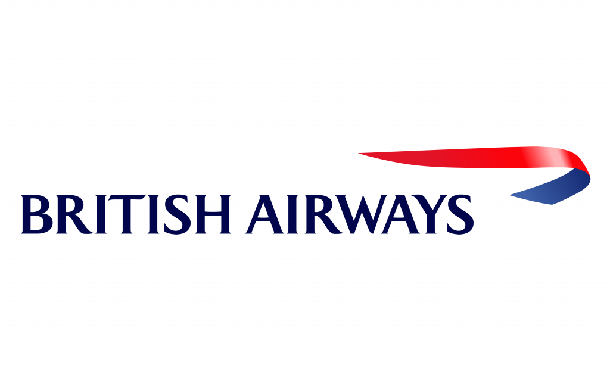

professional experience
As a Development Data Analyst Intern at Block Convey, a pioneering company specializing in blockchain technology solutions, I have had the incredible opportunity to immerse myself in the exciting world of healthcare analytics. Blockchain, the decentralized and immutable ledger system, has revolutionized numerous industries, and its potential in healthcare is truly awe-inspiring. At Block Convey, we believe that blockchain technology has the power to enhance security, privacy, interoperability, and efficiency in healthcare systems. Our mission is to develop innovative solutions that enable seamless data sharing, empower patients with ownership of their health records, and facilitate groundbreaking research and analysis. One of the groundbreaking projects I am fortunate to be a part of revolves around detecting brain tumors. With the aid of advanced machine learning algorithms and the integration of blockchain, we are building a sophisticated system capable of early detection and accurate diagnosis. My role revolves around harnessing the power of machine learning algorithms. By training models on extensive datasets, we enable our system to recognize patterns, anomalies, and potential indicators of brain tumors.
During my time as a Data Science Intern at British Airways, I had the incredible opportunity to contribute to the company’s data science efforts. I engaged in a variety of tasks that allowed me to harness the power of data and make valuable insights for the airline industry. One of the primary responsibilities I undertook was conducting web scraping to extract unstructured data from various sources. This data primarily consisted of customer reviews, which played a vital role in understanding customer sentiment and categorizing their feedback. By employing web scraping techniques, I gathered a substantial dataset of 7GB customer reviews from the Skytrax review website. To gain a deeper understanding of customer sentiments, I utilized the VADER (Valence Aware Dictionary and sEntiment Reasoner) model for sentiment analysis. This approach enabled me to comprehensively analyze the customer reviews, discern positive and negative sentiments, and identify key areas of concern for British Airways. In addition to sentiment analysis, I was tasked with developing a classification model to predict customer buying behavior. By leveraging the power of data cleaning and analysis, I prepared the dataset and utilized machine learning algorithms such as Random Forest and XGBoost. These algorithms enabled me to create a robust predictive model with an impressive accuracy rate of over 85%. My experience with British Airways as a data science intern allowed me to witness the tremendous impact that data-driven insights can have on the aviation industry.
 I worked as a Graduate Assistant at New York University’s Department of Computer Science and Engineering. I had the opportunity to support and guide more than 300 students in their academic journey. I provided dedicated doubt-clearing sessions and supervised exams for undergraduate courses, specifically Data Structures and Algorithms, as well as Introduction to Programming. It was an enriching experience to assist students in understanding complex concepts and helping them succeed in their coursework.
I worked as a Graduate Assistant at New York University’s Department of Computer Science and Engineering. I had the opportunity to support and guide more than 300 students in their academic journey. I provided dedicated doubt-clearing sessions and supervised exams for undergraduate courses, specifically Data Structures and Algorithms, as well as Introduction to Programming. It was an enriching experience to assist students in understanding complex concepts and helping them succeed in their coursework.
Embarking on my professional journey as a SEO Intern and then a Software Engineer, I had the privilege of working with YM Grad in India from June 2020 to July 2021. This valuable experience allowed me to showcase my skills and make a significant impact on the company’s digital presence and user experience. One of my key responsibilities was to boost the company’s website visibility and drive organic traffic. To achieve this, I delved into extensive research to identify high-potential keywords relevant to the industry. By implementing effective search engine optimization (SEO) strategies, I successfully increased the website’s organic traffic by an impressive 200%. I also contributed in creating an administration system that allows users to easily select service plans. This system enables basic operations such as creating, reading, updating, and deleting plans.
projects
During my academic journey at NYU, I had the privilege of engaging in various exciting projects that not only expanded my knowledge but also provided invaluable hands-on experience. These projects encompassed diverse fields and allowed me to explore my passions, develop new skills, and collaborate with talented individuals. In this section, I am thrilled to share the details of some of these remarkable ventures.
- Gesture-Controlled Paper Piano using Computer Vision and Tkinter: The virtual paper piano project involves the integration of Python, OpenCV, and Tkinter to create an interactive interface that responds to hand gestures, simulating the experience of playing a piano. By leveraging the webcam, the program detects and tracks hand gestures in real-time.
- Spotify Data Analysis: Analysed 50 GB Spotify dataset using PySpark and performed feature extraction to derive various insights like popular genres, number of songs released every year, correlation between various features.
- Movie Recommendation System: A system to suggest movies to users based on their preferences and watching history, by analyzing patterns in user behavior and data on movies. The system could make personalized recommendations to individuals.
- Facial Expression Recognition: Build and trained a CNN in Keras to recognize facial expressions. The objective was to classify each face based on the emotion shown in the facial expression into one of the seven categories and serve the trained model predictions to a web interface and perform real-time facial expression recognition on video and image data.
- Fake News Detection: In this project, a Bidirectional Neural Network and LSTM based deep learning model was trained to detect fake news from a given news corpus. This project could be practically used by any media company to automatically predict whether the circulating news is fake or not. The process could be done automatically without having humans manually review thousands of news related articles.
- Deepfake Detection: Designed a novel Res-Next convolution neural network to detect whether the given video is deep faked or pristine. Trained the model on the Celeb Deep Fake and DFDC dataset specifically and tried to improve the accuracy by experimenting with the depth and width of the architecture.